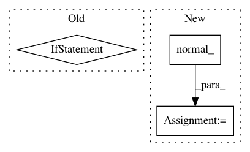

548c67bbe7598c3221b83cf6ef216b848debac2c,parlai/agents/seq2seq/modules.py,OutputLayer,__init__,#OutputLayer#Any#Any#Any#Any#Any#Any#Any#,474
Before Change
self.e2s = nn.Linear(embeddingsize, num_features, bias=True)
else:
// use shared weights and a bias layer instead
if padding_idx == 0:
num_features -= 1 // don"t include padding
shared_weight = shared_weight.narrow(0, 1, num_features)
elif padding_idx > 0:
raise RuntimeError("nonzero pad_idx not yet implemented")
self.weight = Parameter(shared_weight)
self.bias = Parameter(torch.Tensor(num_features))
self.reset_parameters()
self.e2s = lambda x: F.linear(x, self.weight, self.bias)
After Change
if shared_weight is None:
// just a regular linear layer
self.shared = False
self.weight = Parameter(
torch.Tensor(num_features, embeddingsize).normal_(0, 1)
)
else:
// use shared weights and a bias layer instead
self.shared = True
self.weight = shared_weight.weight
In pattern: SUPERPATTERN
Frequency: 3
Non-data size: 3
Instances
Project Name: facebookresearch/ParlAI
Commit Name: 548c67bbe7598c3221b83cf6ef216b848debac2c
Time: 2018-11-15
Author: roller@fb.com
File Name: parlai/agents/seq2seq/modules.py
Class Name: OutputLayer
Method Name: __init__
Project Name: mozilla/TTS
Commit Name: 9b4aa92667ce7977f30f9b6473b567567a78046f
Time: 2018-03-19
Author: egolge@mozilla.com
File Name: layers/tacotron.py
Class Name: Decoder
Method Name: forward
Project Name: cornellius-gp/gpytorch
Commit Name: f7a1a77baf9102cbd20971c8edba71c4adad33d6
Time: 2017-11-05
Author: gpleiss@gmail.com
File Name: gpytorch/__init__.py
Class Name:
Method Name: monte_carlo_log_likelihood